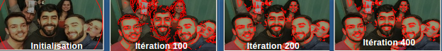

Dans le cadre du travail final du cours d'Algorithmes pour le Traitement d'Images, on s'intéresse au sujet de Contour Active, une technique de segmentation d'une région de l'image. En conséquence, inspiré de l'article [CHANG], on souhaite mettre en place un programme d'identification de visages selon la coloration de la peau représentée par un modèle de coloration en échelle RGB. Pour être en accord aux pratiques effectuées au cours des classes, on utilise la bibliothèque CImg pour le traitement des images. On vise à mesurer la performance de du logiciel mis en place pour identifier le visage. Par ailleurs, on cible l'identification des limites de la méthode aussi bien que leur performance pour identifier d'autres objets dont la coloration soit la couleur de la peau. Des expérimentations sur des images réelles sont présentées ainsi bien que des images artificielles pour répondre aux problématiques et conjonctures établies.
Méthode
Partie théorique
La détection du visage est une tâche de plus en plus importante pour les applications qui concerne le traitement d'images, en spécial pour le traitement de visage dont cette procédure est la première étape d'une reconnaissance automatique du visage en général. Traditionnellement, le gradient d'une image fournit des contours très précis et est donc une des techniques les plus simples pour la détection d'objets d'une image à partir des contours obtenus. Cependant, le visage humain a une particularité face à des objets en général puisqu'il est décrit pour un modèle unique sous l'échelle RGB. On cherche donc à maximiser la performance et la précision de l'identification du visage face à cette caractéristique particulière. Alors, on se tient à l'identification des bornes de l'objet à partir des frontières entre la région faciale et les autres régions de l'image. Pour cela, on met en place le modèle déformable aussi connu comme modèle de contour actif.
Un contour actif est une courbe qui évolue à partir de sa forme initiale vers une forme la plus proche du contour de l'objet d'intérêt sous l'action de la force d'énergie sur cette courbe. Le modèle de contour active mis en place et appelé "Snakes" cherche à minimiser la fonction d'énergie dans la courbe modélisant l'objet d'intérêt. Ce modèle a été introduit par [KASS,1988]. On reprend les notations présentées par [CHANG], puisque c'est l'article de référence pour l'implémentation proposée. On définit donc une image paramétrée par I(x,y) une valeur réelle à partir des coordonnées cartésiennes bidimensionnelles. La courbe de contour sera donc paramétrée comme C(p) = {x(p), y(p)}, où p est un paramètre arbitraire. À partir de l'équation d'énergie proposée par [KASS,1988], on peut écrire l'énergie du contour active comme:
où sont des constantes positives. Les deux premières constantes une contrainte interne au contour. Ce sont des termes de régularisation du contour qui déterminent son élasticité et sa rigidité. Alors, la minimisation de ces termes rend le contour plus précis et propre. D'autre part, la dernière constante est le terme de liaison aux données. Elle dirige le contour vers les zones de plus forts gradients de l'image et donc les régions plus probables d'être des contours. Sa minimisation est donc un détecteur de frontières. En effet, l'énergie est représenté implicitement en ligne de niveaux puisque la courbe évolue au cours des itérations. On dit que est la fonction de ligne de niveaux tel que représente la courbe C selon le référentiel suivant: de façon que la courbe est interprétée dans la direction normale à partir d'une vitesse imposée par la force d'énergie. Il revient donc à résoudre l'équation différentielle suivante:
où définit le contour initial.
Selon [CHANG] cette formulation permet d'implémenter l'évolution de la courbe dans les coordonnées bidimensionnelles initiales. De plus, la convergence de la ligne de niveaux est obtenue à partir des contraintes dérivées de l'image. On identifie donc les frontières de contour par le contour active. À partir de ce modèle, la ligne de niveaux sous-contrainte du gradient est modélisée comme:
À partir de cette technique on s'inspire de l'article [CHANG] afin de mettre en place le modèle dont la ligne de niveaux sera en fonction de la coloration de la peau. Normalement, en espace RGB, la coloration de la peau humaine admettre un modèle particulier et par conséquent fournit un outil fiable de détection de visages, quand la luminance n'est pas prise en compte. Pour supprimer la luminance de la représentation RGB, on doit diviser toutes les composantes de couleur des pixels (R,G,B) par l'intensité. Ce nouveau espace de couleur est appelée de Coloration Chromatique et propose la neutralisation de l'intensité selon des vecteur de couleur en deux composantes (r,g).
La coloration du visage est donc clustérisée dans la région de la coloration chromatique. Elle sera représentée par une approximation de la distribution gaussienne en 2D où .
Les nouvelles composantes de travail selon la coloration seront:
La fonction d'énergie selon des paramètres proposés pour le modèle de contour active est donnée sur la forme:
(4)
où sont des constantes, c est la moyenne de I à l'extérieur de C, et efin intérieur(C) et extérieur(C) sont les régions à l'intérieur et à l'extérieur du contour, respectivement.
On note donc le contour représenté par la ligne de niveau 0 selon la fonction de ligne de niveaux qui respecte à la distribution suivante:
L'énergie peut donc être représentée comme une formulation donc le contour peut être remplacé par la ligne de niveaux . Si on remplace C par en (4) et en suite on calcule l’équation d'Euler-Lagrange, on obtient donc:
où est la courbure de la ligne de niveaux. À partir du voisinage de la ligne de niveaux, on note la courbure comme: .
Implémentation
La mise en oeuvre de ce travail a été fait dans la machine Berzet en utilisant le bibliothèque CImg qu'a été proposée par l'enseignant pendant le cours d'Algorithms for Image Processing dans le cadre d'Ingénieur Informatique de l'ISIMA. Ce projet est également disponible dans le GitHub (https://goo.gl/qTDxar ).
L'structure du projet:
/ //Dossier racine du projet
Images/ //Dossier d'images
testes/ //Images de test
output/ //Dossier avec les résultats obtenus
Rapport/ //Dossier que contient ce présent rapport
contour_actif_visage_rapport_FARIA_et_METZKER_.html //Rapport (Il faut l'ouvrir avec un navigateur web)
main.cpp//Fichier que contient le code du projet
Makefile
Compilation
Pour compiler ce projet il faut seulement exécuter le commande "make" dans le dossier racine du projet. On utilise d'abord la machine berzet.
Exécution
Pour exécuter ce projet il faut informer l'image dans le premier paramètre comme dans l'exemple suivant:
$ ./finalTP NOME_IMAGE
Définitions de base
Dans cet projet nous avons fait quelques définitions. La première est liée à le contour de début. Nous utilisons un circle de rayon égale à taille de l'image divisée par 2 et avec le point d'origine dans le centre de l'Image.
On a changé l'initialisation du LevelSet (ligne de niveaux) pour être l'inverse de l'initialization que nous avons fait dans le cours. Cette modification était nécessaire parce que toutes les définitions que nous avons utilisée sont l'inverse des que sont présentées dans l'artice.
Codage
D'abord les fonctions ExtractContour(), DrawContour() et InitLevelSet() sont les mêmes que nous avons utilisé dans le projet. Le travail principal était modifier la fonction de propagation Propagate(). Dans cette fonction nous définissions quelques parametres pour le modèle, nous calculons la constante C définie ci-dessous et nous réalisons la propagation du LevelSet.
Résultats
Validation sur données de synthèse
Dans un premier temps, on évalue le fonctionnement de l'algorithme pour l'identification du contour de formes géometriques colorées à l'aide du modèle de coloration de la peau. Les images synthètisées sont sont plus rapidement contournées. Àpres 5 mises à jour du calcul, le contour des régions en coloration de la peau est obtenu. Voici deux modèles obtenus avec les paramètres Fig 1 évolution de l'algorithme par une image synthètisée dont les étoiles sont colorées par une couleur de peau. L'erreur de la détection était de 0%.Fig 2 évolution de l'algorithme par une image synthètisée dont les cercles sont colorées par une couleur de peau. L'erreur de la détection était de 0.000469% dont 14 des 29778 pixels du contour n'étaient pas bien identifiés.
On note que l'algorithme proposé calcule le contour en fonction de la coloration de la peau et que les résultats obtenus sont très précis pour les images synthètisées.
Données réelles
Après la validation du fonctionement du modèle à partir des images synthètisées, on évalue le fonctionnement de l'algorithme pour l'identification des visages. On présenté quelques résultats dont les images sont obtenues à chaque 100 itérations de calcul.
Fig 3 évolution du modèle proposée dont Fig 4 évolution du modèle proposée dont

Fig 5 évolution du modèle proposée dont
On note que pour chaque image, il faut réguler les paramètres afin d'ajuster la convergence du calcul du contour. De plus, bien que l'intensité soit normalisée pour la paramétrisation de l'image, on note sont influence dans le calcul, ce qui perturbe l'identification du contour dans des régions dont la coloration soit très similaire à la coloration de la peau humaine ou qui ait une très grande variation du gradient de l'image.
Discussion
La précision des résultats
Le calcul du contour actif à partir de la ligne de niveaux selon la coloration de la peau est suffisamment précis pour l'identification des visages. En fait, pour les formes géométriques colorées par le modèle de coloration de la peau humaine, le modèle est extrêmement efficace et la convergence du calcul est rapide. Dans une limite de 10 itérations, normalement le calcul fournit le contour exact de la forme d'intérêt. Quand on analyse les photos, l'intensité et luminance perturbent le calcul et donc plus d'itérations sont nécessaires pour la convergence du calcul. On note que normalement, quelques centaines d'itérations sont requises pour la précision du calcul.
On note que les paramètres ne sont pas déterminants pour la précision du calcul par des images synthétisées, alors on définit un paramétrage défaut qui fournira des contours précis pour ce type d'image en général. D'autre part, les paramètres doivent être adaptés pour fournir la plus grande précision du calcul du contour sur des images réelles puisqu'ils doivent contrôler le calcul en minimisant les perturbations extérieures aux facteurs de calcul. De plus, les constantes de rigidité et de liaison des données du calcul doivent être synchronisées afin d'obtenir la convergence. Si le réglage n'établit pas une relation correcte entre ces constantes, donc le calcul divergera.
Ainsi bien comme l'article référence, l'algorithme identifie plusieurs visages sur une même photo. En fait, le contour initial est partitionné lorsque différentes régions d'intérêt sont identifiées et le calcul est fait par les différentes partitions jusqu'à la convergence vers les frontières des visages.
On note que les régions dans le visage qui n'est pas de la peau ont des frontières également identifiées, comme les sourcils, la bouche, la barbe. De plus, quelques contours plus sombrés du visage sont également identifiés.
Limites de l'algorithme
Cette approche est limitée par plusieurs inconvénients. On liste ceux qui sont les plus évidents:
La reconnaissance requiert la bonne initialisation des paramètres aussi bien que le bon positionnement du contour initial. C'est-à-dire que l'énergie sur la courbe est dépendante de la paramétrisation du contour.
La convergence est obtenue seulement par des frontières non-concaves de l'objet d'intérêt quand la contrainte de régularité est très significative par ce modèle. Alors le résultat sera soit la divergence du calcul ou une très élevée perturbation des résultats.
La constante de rigidité entraîne des perturbations du calcul.
Conclusion
On a proposé une implémentation en CImg du modèle de contour active pour l'identification de visages dans une image fournie. Pour cela, on représente la ligne de niveaux de la force d'énergie du contour à partir du modèle de coloration de la peau humaine. On visait l'identification des visages à partir de la détection des frontières de la peau dans la région du visage. Les résultats sont satisfaisantes, précis et extensibles à l'identification de plusieurs visages dans le même traitement.
Références
[CHANG] Jae-Sik Chang1, Mu-Youl Lee1 , Chae-Hyun Moon1, Hye-Sun Park1, Kyung-Mi Lee2, Hang-Joon Kim. "Face detection using active contours"
[KASS,1988] M. Michael Kass, Andrew Witkin, Demetri Terzopoulos. "Snakes : Active contour models". International Journal of Computer Vision, 1 :321?332, 1988
[GASTAUD, 2005] Muriel Gastaud. "Modèles de contours actifs pour la segmentation d’images et de vidéos". Automatique
/ Robotique. Université Nice Sophia Antipolis, 2005.